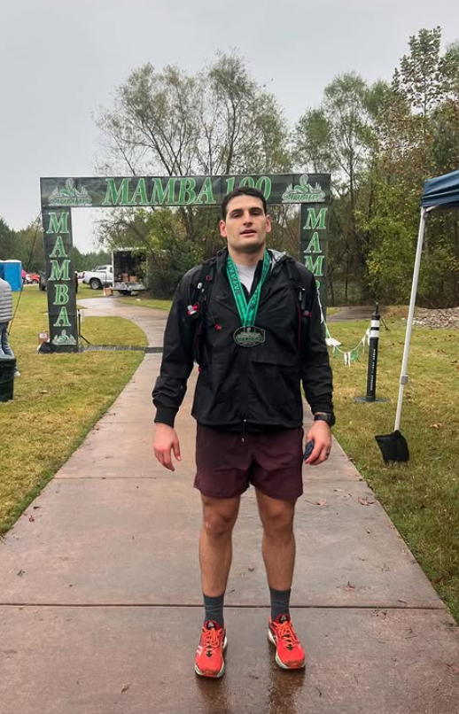

About Korab and the story
About Korab
A life built at the edge of potential.
Korab Idrizi is a doctoral student, performance coach, former Division I football player, and Mamba 100 ultramarathon finisher. His work is shaped by discipline, resilience, and a rare respect for what people can become when they refuse to settle.
His path into the study of human behavior began with lived experience: the pressure of high-level sport, the discipline of training, and the desire to understand what allows ambitious people to keep growing without losing themselves.
Ph.D. (in progress), Counseling Psychology, Tennessee State University
M.S.Ed., Mental Health Counseling, Fordham University
B.A., Psychology, Boston College
Division I football
Boston College
He learned pressure before he studied it.
As a Division I football player at Boston College, Korab lived inside a world that demands discipline, resilience, accountability, and composure under pressure.
That chapter still shapes how he works. He understands the mind of the high performer because he has felt the weight of preparation, expectation, injury, competition, and identity from the inside.

Mamba 100 ultramarathon
100 mile ultramarathon
A rare relationship with endurance.
Completing the Mamba 100 in 2024 was not a performance anecdote. It was a 100 mile test of patience, discomfort, self-command, and the ability to keep moving when the mind starts negotiating.
Based on 148,169 recorded 100-mile finishers from 1870-2020, compared with roughly 7.8 billion people worldwide in 2020.
That rarity matters because the distance demands more than fitness. Korab brings that same lived respect for endurance into his work with high performers: external achievement matters, but so does the person you become while pursuing it.
Start a consultation
